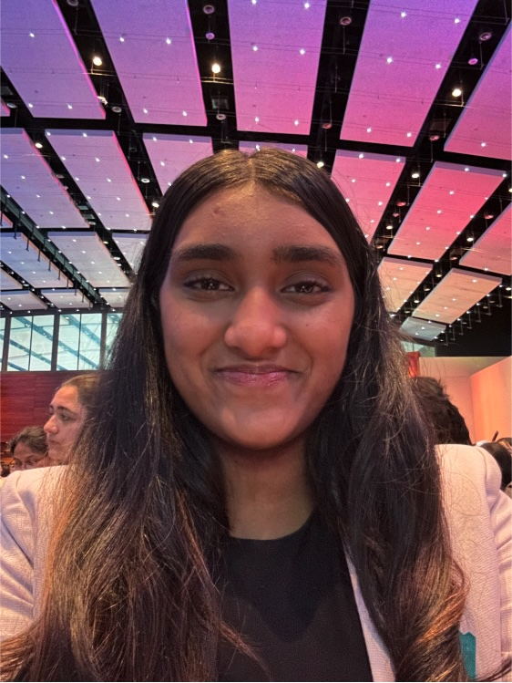

Anushka Pagare
Solon, Ohio Chapter Founder
Hi! My name is Anushka Pagare, and I plan to become a cardiologist when I’m older. I believe Hearts for Healing is a great way to develop my skills while helping others.
I’m excited to support my community through meaningful projects and compassionate service.